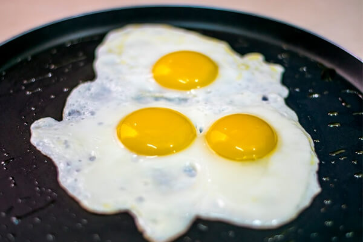

Яичница
СПОСОБ ПРИГОТОВЛЕНИЯ1. Поставьте сковородку (лучше всего маленькую с толстым дном) на большой огонь. Налейте масла. Когда масло нагреется (но еще не закипит), осторожно разбейте яйца.
2. Через 30 секунд уменьшите огонь до среднего и жарьте еще примерно минуту, периодически наклоняя сковородку в разные стороны и поливая яичницу горячим жиром. Переложите на теплую тарелку и немедленно подавайте.

Приятного аппетита!
Больше информации здесь \/ \/ \/
И.Н.Ф.А